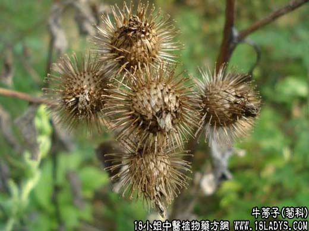

【中药概述】
牛蒡子为菊科草本植物牛蒡的成熟果实。辛、苦、寒。归肺、胃经。
1．疏散风热：用于风热表证，温病初起，有疏散风热，宣肺利咽的作用，如（银翘散）、（<证治准绳>牛蒡汤）。
2．咽喉肿痛：用于风热上扰咽喉肿痛，有利咽喉消肿之效，常配黄芩，升麻，玄参等同用。
3．止咳去痰：用于风热外感咳嗽有痰之症，具有祛痰止咳作用，常配伍前胡，桔梗等药。
4．透疹发表：用于麻疹透发不畅或透而复隐。常配薄荷，蝉蜕，葛根等；热毒壅盛者，可与大青叶，紫草，赤芍，升麻等配伍，以清热凉血，解毒透疹。
5．清热解毒：用于热毒疮肿尚未溃者。可与清热解毒药配伍。
【药效鉴别】
牛蒡子有清热解毒作用，常用于咽喉红肿疼痛，如急性扁桃体炎、喉炎、咽炎等，常配山豆根，玄参，桔梗，甘草，黄芩等药。
【药理作用】
水煎剂对溶血性金黄色葡萄球菌有抑制作用。对皮肤真菌有抑制作用。
【化学成分】
含牛蒡子甙、脂肪油、少量生物碱及维生素A、B1等。
【用量用法】
3——10g，入汤剂宜捣碎。炒用寒性略减。
【使用注意
气虚便溏者忌。
【附】
炒牛蒡子：辛、苦，凉。炒后寒滑之性下降，可免滑肠致泻，常与蝉蜕、薄荷、葛根等配伍。